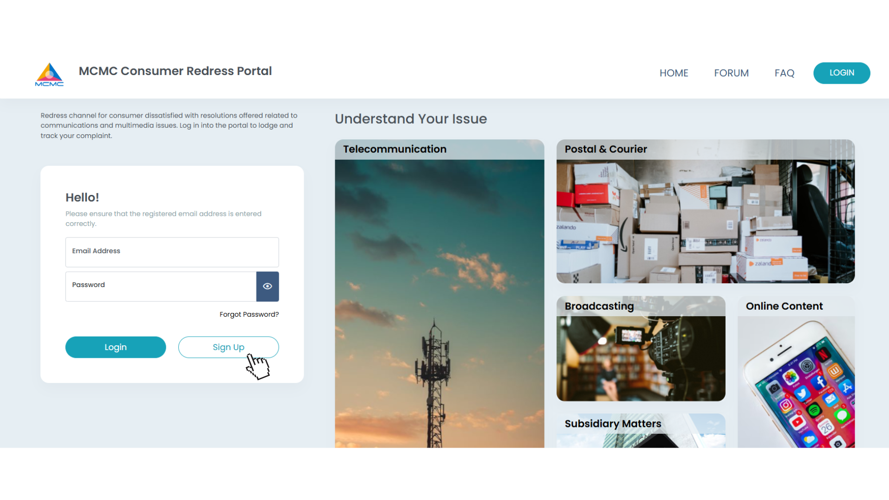

Suruhanjaya Komunikasi dan Multimedia Malaysia (MCMC)

Daftar Akaun
- Klik pada butang "Sign Up" yang dipaparkan dengan jelas pada halaman utama.
- Isi borang perndaftaran dengan butiran peribadi dan alamat e-mail dengan tepat.
- Selepas mendaftar, anda akan secara automatik dialihkan ke halaman "Login". Sila teruskan dengan log masuk.
Sahkan Akaun
- Setelah log masuk, navigasi ke tetapan profil anda untuk mengesahkan e-mail anda.
- Buka peti masuk e-mail anda dan klik pada pautan pengesahan yang disediakan.
- Kemaskini maklumat anda dalam portal untuk melengkapkan pendaftaran.
Report
- Akses borang aduan melalui label 'Aduan Baharu' atau mana-mana tab sekto aduan.
- Selepas menyerahkan aduan anda, anda mungkin akan menerima mesej pengesahan atau nombor rujukan.
- Simpan maklumat ini untuk rujukan di masa hadapan.